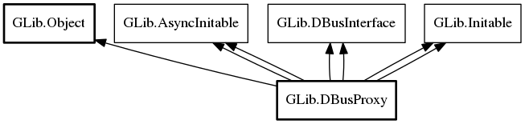

DBusProxy
Object Hierarchy:
Description:
public class DBusProxy : Object, AsyncInitable, DBusInterface, Initable, AsyncInitable, DBusInterface, Initable
DBusProxy is a base class used for proxies to access a D-Bus interface on a remote object.
A DBusProxy can be constructed for both well-known and unique names.
By default, DBusProxy will cache all properties (and listen to changes) of the remote object, and proxy all signals that gets emitted. This behaviour can be changed by passing suitable DBusProxyFlags when the proxy is created. If the proxy is for a well-known name, the property cache is flushed when the name owner vanishes and reloaded when a name owner appears.
If a DBusProxy is used for a well-known name, the owner of the name is tracked and can be read from g_name_owner. Connect to the notify signal to get notified of changes. Additionally, only signals and property changes emitted from the current name owner are considered and calls are always sent to the current name owner. This avoids a number of race conditions when the name is lost by one owner and claimed by another. However, if no name owner currently exists, then calls will be sent to the well-known name which may result in the message bus launching an owner (unless g_dbus_proxy_flags_do_not_auto_start is set).
The generic g_properties_changed and g_signal signals are not very convenient to work with. Therefore, the recommended way of working with proxies is to subclass DBusProxy, and have more natural properties and signals in your derived class. This example shows how this can easily be done using the gdbus-codegen tool.
A DBusProxy instance can be used from multiple threads but note that all signals (e.g. g_signal, g_properties_changed and notify) are emitted in the thread-default main context of the thread where the instance was constructed.
An example using a proxy for a well-known name can be found in gdbus-example-watch-proxy.c
Namespace: GLib
Package: gio-2.0
Content:
Properties:
Static methods:
Creation methods:
Methods:
Signals:
Inherited Members:
All known members inherited from class GLib.Object

All known members inherited from interface GLib.AsyncInitable
All known members inherited from interface GLib.DBusInterface
All known members inherited from interface GLib.Initable